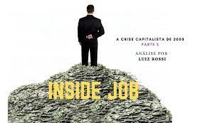
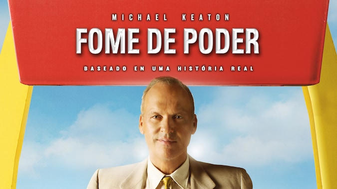
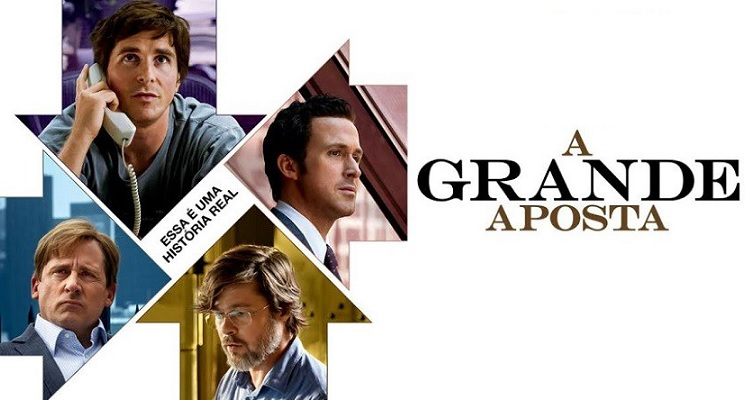

FILMES E SÉRIES SOBRE O CAPITALISMO
Inside Job
Esse documentário fala sobre a atual economia dos últimos
anos, e também sobre a crise capitalista financeira global de
2007 e 2008, causada pelo aumento extremo nos valores de
mobílias, que não foi suportado pela demanda e renda da população.
Fome de Poder
Fome de Poder retrata a história da criação e desenvolvimento
do McDonald's, e hoje é uma das maiores indústrias que vende fast
food, que antes, era uma pequena lanchonete local criada por dois
irmãos, Maurice e Richard McDonald. Esse filme mostra como funciona
o mundo do empreendedorismo e negócios em nosso mundo capitalista.
A Grande Aposta
Esse filme baseado em uma história real, conta como investidores
descobriram sobre uma grande bolha imobiliária nos Estados Unidos
e sobre grandes investimentos foram feitos, que poderiam causar
um grande colapso e assim uma crise econômica, que por fim,
ocorreu em 2008.